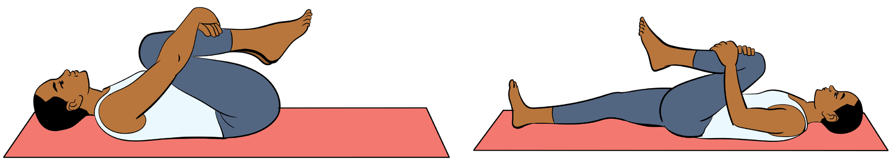

(iii) Hold on the same pause for five seconds;
(iv) Repeat three to five times; and
(v) The knee to chest exercise can also be performed by grasping one leg after another alternatively.

(a) By two legs (b) By one leg
Figure 3.8: Knees to chest exercise
Muscular endurance
Muscular endurance is the ability of the muscles to perform physical activities continuously for a long period of time without getting undue fatigue. The sit up test is commonly used to test muscular endurance.
Exercises for endurance
Push-ups, lunge, running, sit-ups, crunches, as well as squats are commonly used to build up muscular endurance. Perform those exercises as already described in this book.
Muscular strength
Muscular strength can be defined as the amount of force a muscle can produce with a single maximum effort. Examples of exercises include bench press, leg press and bicep curl. The push-up test is commonly used to test muscular strength of the upper body while sit-ups can be used for lower body.